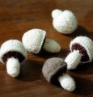

|
||
Premium Patterns Wintry Mix Mitts Love Bytes HawkeyeFree Patterns Kiddie Cadet Summerlin Ruffled Scarf Seamless DS Sock Simply Seamless Pouch Myriads of MushroomsExtras DIY Mitten Blocker Felt Patch Tutorial Yarn Dyeing Tutorial Needle Pouches Knitting Journal |
January 28, 2011 - Posted by Grace SchneblyYou are what you knitProject Specs Pattern: Knitted ' Shrooms designed by Abby Kroken The original inspiration I had for my niece's Christmas present was a little play CSA basket filled with fruits and veggies to help her become more receptive to trying new foods. She is 4 years old and going through a bit of phase where she finds every vegetable disgusting, so I thought that if she is at least pretending to eat them and feeding them to her dolls, maybe she will become more receptive to actually trying them. Not to mention this is a great way to use up my insanely huge Patons stash that must be gone by the end of the year or I think I'll go crazy! I thought if there was one veggie I had to knit, it was carrots, and these were so easy to make. Just a few increases, a few knit rows, a few decreases, and before you know it you've got yourself a carrot! The pattern gives instructions for one size (the smallest size I knit), but it is easy to modify your carrots to be longer. I just added a few extra knit round between each decrease round, and went with whatever looked good at the moment. The nice thing about knitting fruits and veggies is that they don't have to be perfect or uniform because the real ones are never that way anyway. The tops of the carrots are from Hansi Singh's Amigurumi Knits book which has a whole section of vegetables in the beginning. The top is a very simple, but of course clever, and creates a nice frilly twisting carrot foliage. I knit just one stem for each carrot following the instructions for the smallest carrot top in the book. The mushrooms were one of my favorite things that I knit for this project. I don't know how common button mushrooms are in CSA baskets, but honestly how could I resist? They're so cute and look pretty realistic! This pattern takes a little bit more work than the carrots, but only because there is a color change and a few more ends you have to weave in. If you're not really into knitting food to play with, I thought that these would make adorable ornaments or great cat toys with a little bit of cat nip inside. |
   Recent ReviewsRecent Posts
 Our Favorites
|
| © 2007 KathrynIvy.com | ||
{kind=link}
{kind=link}